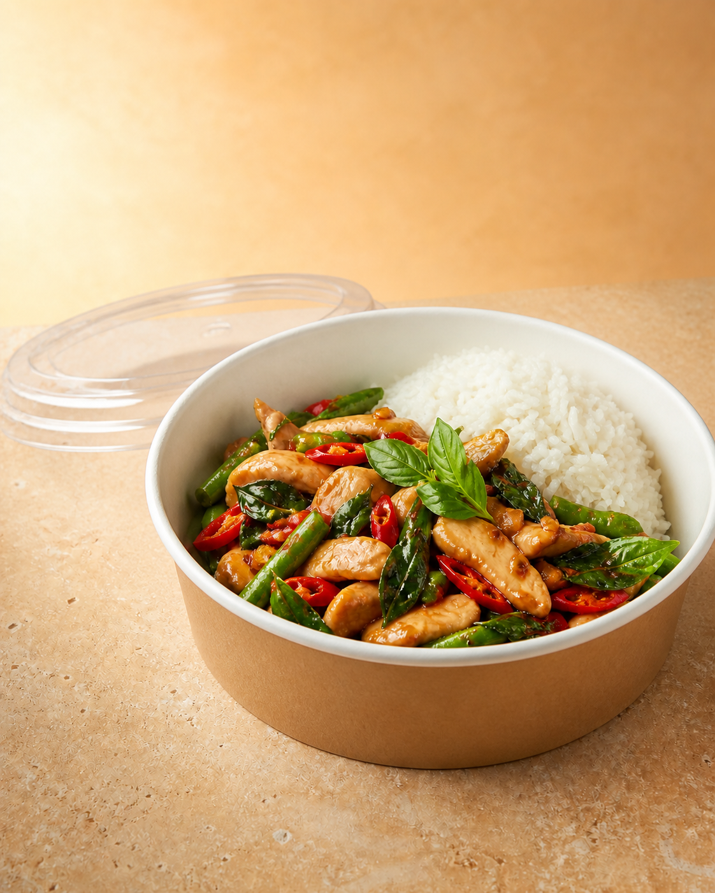
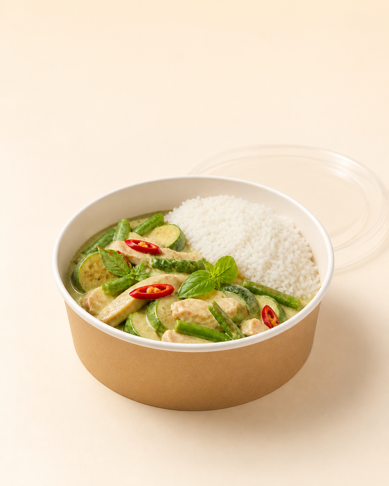
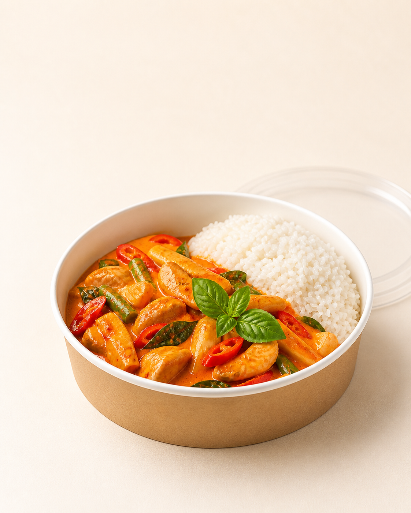
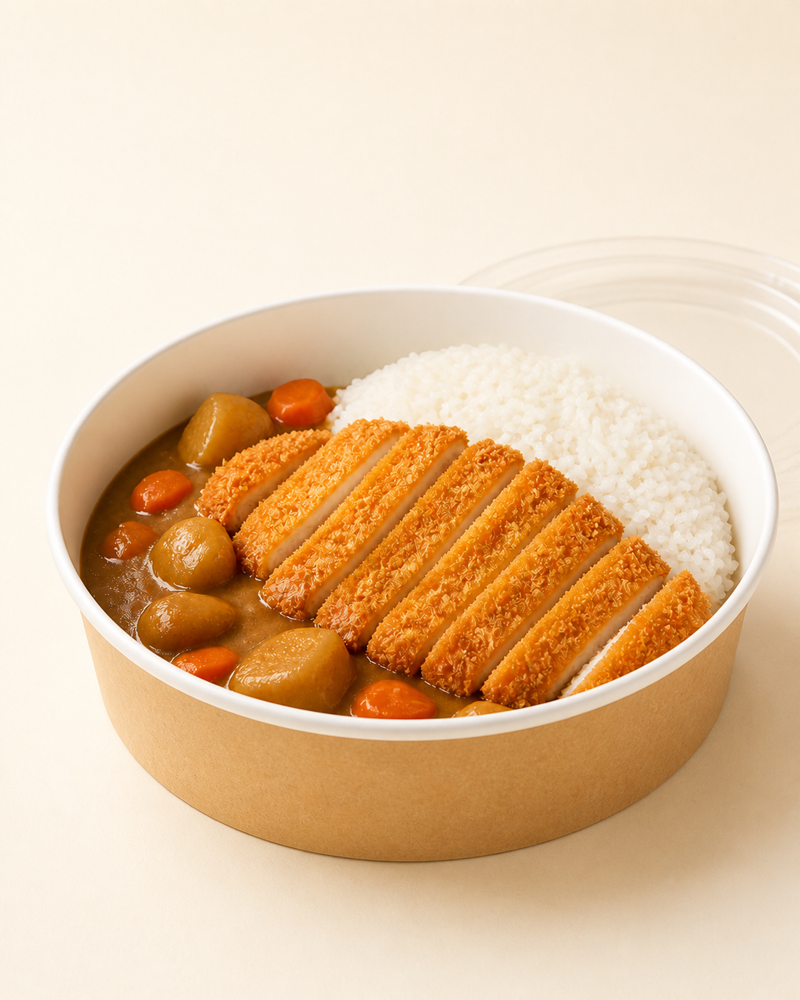
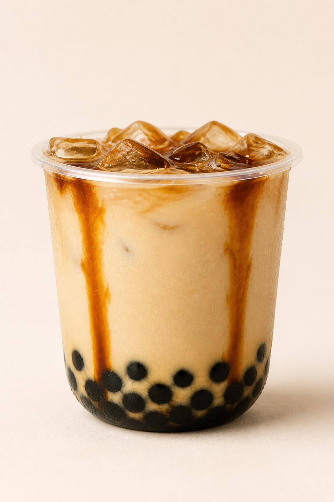
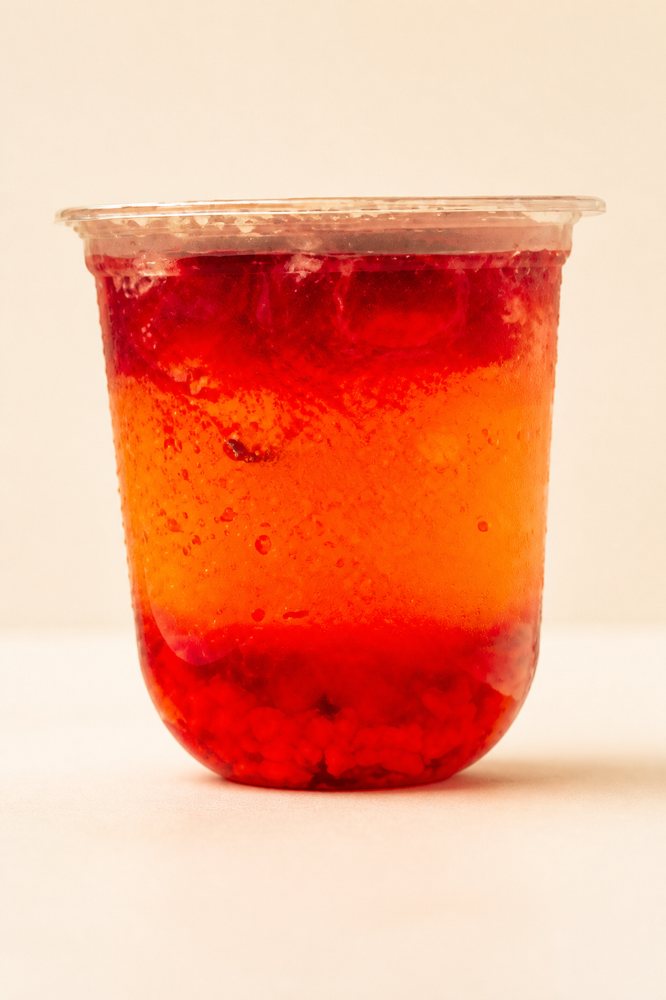
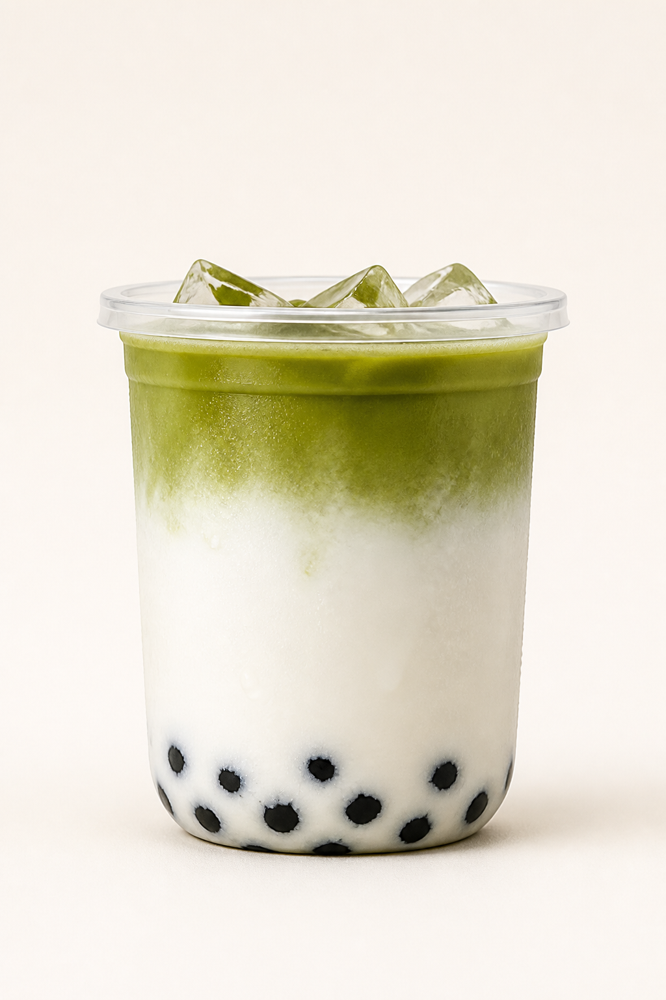
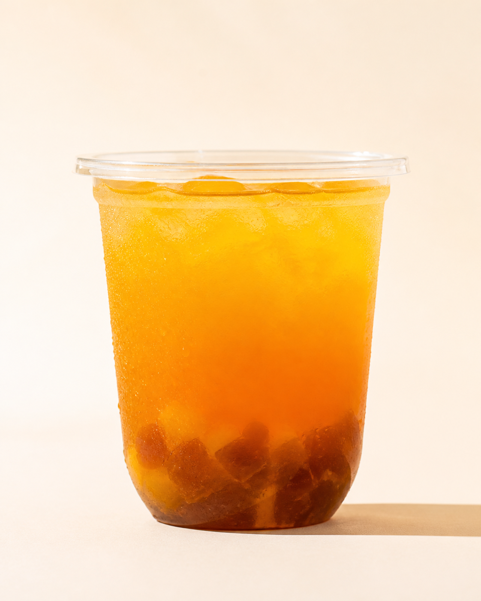
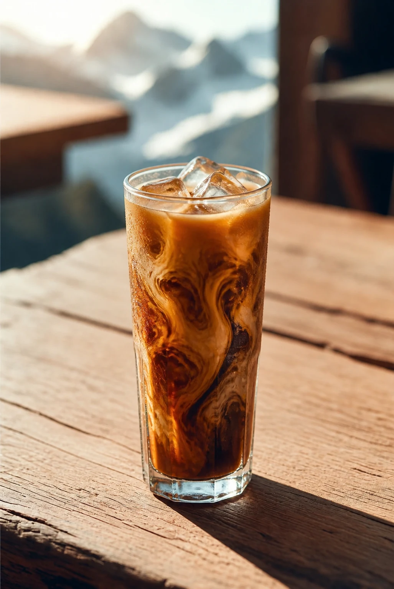

Café Meal · Dine In or Takeaway
Spicy Basil
Thai holy basil, garlic, fresh chilli, seasonal vegetables & jasmine rice.
Asian Café · Central Interlaken
Thai food. Bubble tea. One colourful stop.
Thai café meals for dine in or takeaway, plus Bubble Tea, coffee, matcha and drinks to go — every day from 11:00 to 19:00.
Dine In · Thai Takeaway · Drinks Grab & Go

Thai favourites and crispy Chicken Katsu with jasmine rice.
Bubble Tea, matcha and coffee for every part of the day.
Next to Interlaken’s main public car park.
Available from 15 August 2026 · Speisekarte
Three Thai favourites and Japanese Chicken Katsu Curry with jasmine rice — for lunch, dinner, dine in or takeaway.
Café Meal · Dine In or Takeaway
Thai holy basil, garlic, fresh chilli, seasonal vegetables & jasmine rice.

Café Meal · Dine In or Takeaway
Creamy coconut milk, Thai green curry, fresh vegetables & jasmine rice.

Café Meal · Dine In or Takeaway
Red curry paste, coconut milk, vegetables, sweet basil & jasmine rice.

Café Meal · Dine In or Takeaway
Crispy panko chicken, Japanese curry sauce & jasmine rice.
Bestselling drinks
Four guest favourites across Bubble Tea, fruit tea and matcha — each one given equal space, with every full menu still one click away.

Milk tea with deep brown-sugar ribbons and chewy pearls.

Bright strawberry fruit tea with a juicy ruby finish.

Creamy milk, earthy matcha and chewy pearls in clean layers.

Golden mango tea with a refreshing tropical finish.
Milk tea, fruit tea and chewy tapioca.
Creamy, balanced and served hot or iced.
Thoughtfully made café classics.
Early dinner in Interlaken
Thai food and café drinks in central Interlaken — an easy dine-in or takeaway meal until 19:00.


Our kind of place
We blend Asian-inspired drinks with familiar café comforts: quality ingredients, playful flavours and the kind of service that remembers a smile.
Whether you're a local on your lunch break or a traveller between adventures, this is your place to slow down for a moment.
“Food to nourish your soul.”
Guest notes
“The bubble tea was amazing—refreshing, perfectly sweet, and the pearls had the ideal chewy texture.”
“I stayed in Interlaken for four days and tried their teas every day—authentic taste and reasonably priced.”
“The best bubble tea I've ever had. Very nice and friendly service. Highly recommend!”
Nearby wellness partner
Pair your café pause with an authentic Thai massage just moments away.
Meet our partnerFind your way
Find our Asian café near Interlaken centre for Thai food, Bubble Tea, coffee or matcha — next to Interlaken’s main public car park.